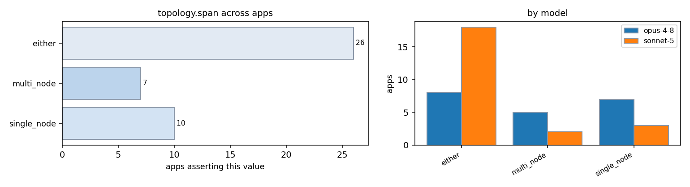

| app / variant | opus-4-8 | sonnet-5 | evidence |
|---|---|---|---|
| AMG2023:cpu | — | either | README.md:10-12 (SPMD MPI+OpenMP with PxQxR decomposition running across many ranks; can be single or multi node depending on P*Q*R) |
| AMG2023:cuda | — | either | README.md:10-13 (GPU-capable SPMD MPI code with PxQxR decomposition; multi-node HPC clusters e.g. Crusher/Tioga per Makefile comments) |
| AMG2023:mpi | either | — | README.md:10-12 (SPMD data decomposition, weak scaling across MPI tasks) amg.c:334 (P x Q x R processor topology scales to many ranks) |
| AMG2023:rocm | — | either | README.md:10-13 (GPU-capable SPMD MPI code; multi-node HPC clusters e.g. Crusher/Tioga per Makefile comments) |
| AMG:threaded-mpi | multi_node | multi_node | docs/amg.README:166-171 (run on BG/Q up to >1,000,000 MPI processes) docs/amg.README:172 (increase problem size and processors in tandem) docs/amg.README:166-170 (BG/Q up to over 1,000,000 MPI processes, BG/P up to 125,000) |
| Kripke:cpu | — | either | README.md:240-254 (3D rank grid decomposition, could be run on single or multiple nodes depending on --procs/--zones sizing) |
| Kripke:kripke.exe:cuda | — | either | README.md:240-254 (3D rank grid decomposition sized by problem, can span single or multiple GPU nodes) |
| Kripke:kripke.exe:rocm | — | either | README.md:240-254 (3D rank grid decomposition sized by problem, can span single or multiple GPU nodes) |
| Kripke:kripke:cuda | either | — | README.md:242 (--procs npx,npy,npz distributes over ranks/GPUs) |
| Kripke:mpi | either | — | README.md:8 (distributed sweep over MPI tasks in 3D) README.md:242 (--procs npx,npy,npz) |
| Quicksilver:cuda | — | either | src/READ.ME.HOW.TO.RUN:47-56 (I x J x K MPI domain grid used regardless of accelerator build) |
| Quicksilver:threaded-mpi | either | — | Examples/CORAL2_Benchmark/Problem1/P1_64t.sh:14-29 (multi-node srun -N up to 24576) |
| Quicksilver:threaded-mpi-cpu | — | either | src/READ.ME.HOW.TO.RUN:47-56 (domain decomposition into I x J x K ranks over a structured mesh, requiring product to equal MPI rank count) |
| STREAM:mpi | — | either | README:39-40 ("performance should scale linearly with the size of the cluster") |
| STREAM:stream_c.exe:threaded | single_node | single_node | single-process OpenMP, no MPI (absent: MPI_ in stream.c) Makefile:1-2 (single gcc -fopenmp build, no distributed launch) README:34-36 (MPI not preferred; intended for shared-memory systems) |
| STREAM:stream_f.exe:threaded | single_node | — | single-process OpenMP (absent: MPI_ in stream.f) |
| hpl:mpi | — | multi_node | www/software.html:35-38 ('assuming you have 4 nodes for interactive use') implies typical runs span multiple nodes/hosts TUNING:101-105 (process-to-node mapping row/col major matters for multi-processor nodes) implies designed for multi-node clusters |
| hpl:mpi-cpu | multi_node | — | TUNING:126-128 (example needs at least 16 nodes for a 2x8 grid) README:6-10 (distributed-memory computers) |
| hypre:mpi | either | — | src/test/ex5.c:15 (mpirun -np 4); library targets massively parallel machines per README.md:11-13 |
| hypre:mpi-cpu-boomeramg | — | either | src/test/ex3_for.c:15 (mpirun -np 16 ex3), src/test/ex5_for.c:15 (mpirun -np 4 ex5) show multi-rank invocations without node pinning; ParCSR row-distribution scales across nodes |
| hypre:mpi-cuda-boomeramg | — | either | absent: nodes=|SLURM_NNODES|--ntasks-per-node in src/test (no literal node/task count found in example run commands beyond mpirun -np, e.g. src/test/ex5_for.c:15) |
| lammps:cuda-kokkos | either | — | doc/src/Speed_kokkos.rst:330-334 (multi-node multi-GPU runs coordinate over MPI) |
| lammps:mpi | either | — | src/REAXFF/pair_reaxff.cpp:389-390 (domain decomposition, scales to many ranks/nodes) |
| lammps:reaxff | — | either | bench/POTENTIALS/log.9Oct20.reaxc.1 and log.9Oct20.reaxc.4 (same input run at 1 and 4 MPI tasks) |
| miniFE:miniFE.x:mpi | either | — | README.FIRST:53-56 (weak-scaling across many MPI ranks) |
| miniFE:miniFE:mpi | — | either | ref/src/exchange_externals.hpp:96-153 (halo exchange sized by problem decomposition, small messages per neighbor) README.FIRST:44-60 (scaling rules imply distributed multi-rank runs for larger problems) |
| miniFE:miniFE:threaded-mpi | — | either | README.FIRST:44-60 (scaling rules imply distributed multi-rank + threaded compute resources) |
| miniFE:mpi-cuda | — | either | README.FIRST:44-60 (scaling rules imply distributed multi-rank runs, each with own GPU) |
| mixbench:cpu | — | single_node | mixbench-cpu/main.cpp:46-79 (single process, no MPI, launches on local node only) |
| mixbench:cuda | single_node | single_node | mixbench-cuda/main-cuda.cpp:20-23 (single-device benchmark, no distribution) mixbench-cuda/main-cuda.cpp:38-96 (single process invocation, one GPU_ID argument, no MPI/cluster support) |
| mixbench:opencl | single_node | — | mixbench-opencl/loclutil.h:31 (single device index) |
| mixbench:rocm | single_node | — | mixbench-hip/main-hip.cpp:27 (single device) |
| mixbench:sycl | single_node | — | mixbench-sycl/main-sycl.cpp:14-15 (single device benchmark) |
| mixbench:threaded | single_node | — | mixbench-cpu/README.md:3 (OpenMP for CPUs, single node) |
| osu-micro-benchmarks:cpu | — | either | README.md:108-111 (rank-to-host mapping discussion for multi-host runs via hostfile) |
| osu-micro-benchmarks:mpi-cpu | — | either | c/mpi/pt2pt/standard/osu_bw.c:116-123 (fixed exactly 2 processes; a bandwidth test between exactly a pair of ranks) |
| osu-micro-benchmarks:osu_allreduce:mpi | multi_node | — | README.md:938 (mpirun_rsh -np 2 -hostfile hostfile ...); collective benchmark is meant to measure real interconnect across nodes |
| osu-micro-benchmarks:osu_bw:mpi | multi_node | — | README.md:938 (mpirun_rsh -np 2 -hostfile hostfile osu_hello example) |
| osu-micro-benchmarks:osu_latency:mpi | multi_node | either | README.md:1040 (mpirun_rsh -np 2 -hostfile hostfile) c/mpi/pt2pt/standard/osu_latency.c:106-113 (only 2 ranks, tight loop, benefits from co-location/low-latency path); README.md:1040 (example runs across a hostfile, i.e. can also be multi-node to test inter-node latency) |